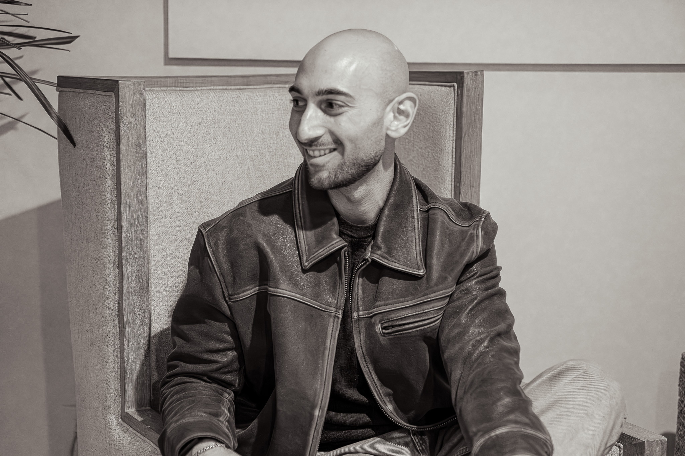

The man behind
the work.

Joseph Galifi is a New York–born businessman, founder, and operator who has spent his career building at the intersection of business development, creative production, real estate, and emerging technology.
What he knows, he learned in motion. Deals taught him judgment. Rooms taught him reading people. Building companies taught him everything in between. The disciplines he needed, he picked up as the work required them.
His interests run deep. Technology, innovation, real estate, business dynamics — these aren't hobbies, they are an embodiment. He has traveled extensively across the globe — for business and for pleasure — and those experiences have shaped how he sees markets, people, and opportunity. He doesn't operate with a regional mindset. He thinks globally, acts precisely, and builds for longevity.
He is the kind of person who walks into a room and understands its dynamics before he says a word.
He has sat across from government ministers, presidents, creative directors, developers, and institutional decision-makers — and has found a way to add value in every seat. His credibility wasn't handed to him. It was earned through consistent execution, thoughtful relationship building, and a refusal to cut corners on quality or character.
What drives him isn't recognition — it's the craft. Building things that work. Systems that compound. Relationships that multiply. He has the perspective of someone who has seen how the rest of the world operates and knows exactly where the gaps are.
Self-taught
A long habit of learning whatever the work required. The approach has always been the same: learn what the work needs, and learn it well.
Globally fluent
Operating across Europe, Africa, Asia, and the Americas has built an instinct for how deals move, how trust is established, and how things actually get done in each market.
Institutionally trusted
A track record built across government tables, boardrooms, and the right relationships at the right level.